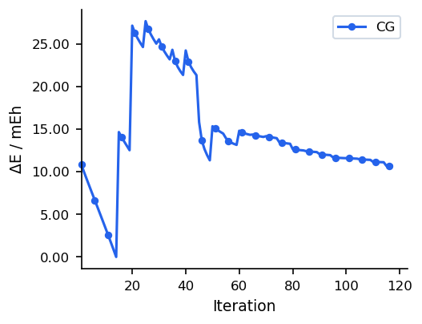
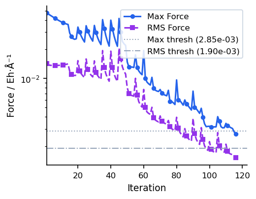

Conjugate Gradient (CG)
Overview
The conjugate gradient optimizer builds a search direction that is conjugate to all previous directions, avoiding the zigzagging characteristic of steepest descent. Each step reuses gradient history through a scalar coefficient β (the beta formula), making CG substantially more efficient than pure SD on smooth energy surfaces. Invoked with method=cg inside #opt().
MAPLE implements the Polak–Ribière-Plus (PRP+) formula by default, with automatic direction restart when the gradient changes significantly. Optional DIIS acceleration can be applied periodically to further speed convergence.
Parameters
| Parameter | Type | Default | Description |
|---|---|---|---|
max_step |
float | 0.2 |
Maximum step length in Angstrom. |
max_iter |
int | 256 |
Maximum number of optimization cycles. |
cg_restart_threshold |
float | 0.2 |
Restart CG directions when the gradient change ratio exceeds this value. |
cg_beta_method |
str | "prp+" |
Conjugate gradient beta formula. prp+ (Polak–Ribière-Plus) is recommended for molecular optimization. |
diis_enabled |
bool | True |
Enable DIIS extrapolation acceleration. |
diis_store_every |
int | 5 |
Store a DIIS snapshot every N steps. |
diis_min_snapshots |
int | 3 |
Minimum snapshots required before DIIS extrapolation is attempted. |
diis_memory |
int | 6 |
Maximum number of DIIS snapshots stored. |
write_traj |
bool | False |
Write intermediate geometries to a trajectory file. |
traj_every |
int | 1 |
Write trajectory frame every N steps. |
verbose |
int | 1 |
Output verbosity level. |
Input Example
#model=uma
#opt(method=cg)
#device=gpu0
C -0.77812600 -1.06756100 0.32105900
C 1.30255300 0.05212000 -0.02829900
C -0.97199300 1.45624900 0.82365700
C 1.98122900 -0.41843300 1.25017500
C 2.26403300 0.43516800 -1.13310700
N 0.29116400 -0.87682100 -0.50039900
N -2.01916300 -1.37200600 -0.23311200
O -1.66473400 1.63022300 -0.40183700
H -2.25863200 0.87013900 -0.47589900
H 0.02784900 -0.67831200 -1.45849500
H -0.60975900 -1.36785600 1.34117800
H 0.68126400 0.91830000 0.28694100
H -2.57326300 -2.05736100 0.25741200
H -2.05242800 -1.50454200 -1.23382300
H -0.36899300 2.35139200 0.99174700
H -1.63960900 1.29421500 1.67465300
H 2.76444900 0.29146200 1.52284600
H 1.72511400 0.73069500 -2.03779400
H 2.43559300 -1.40609800 1.13421500
H 1.27300500 -0.44722400 2.08057900
H 2.85034500 1.29869700 -0.81432200
H 2.96000900 -0.36880600 -1.38891000When to Use
- Smooth energy surfaces: CG converges much faster than SD on well-behaved surfaces by exploiting gradient history to build conjugate search directions.
- Memory-constrained environments: CG stores only the previous gradient vector, making it more memory-efficient than L-BFGS for very large systems.
- Starting from a reasonable geometry: CG is most effective when the initial forces are moderate. For severely distorted structures, consider starting with SD or the automatic SD/CG fusion.
Convergence Behaviour
The figures below show a typical CG run on a 22-atom organic molecule (UMA model). Compared to steepest descent, CG avoids zigzagging by building conjugate search directions, leading to smoother convergence near the minimum.


For most use cases, SD/CG (which runs SD first and automatically switches to CG) is preferable to pure CG, as it combines robust initial descent with efficient final convergence. Pure CG is best when the starting geometry is already reasonable.